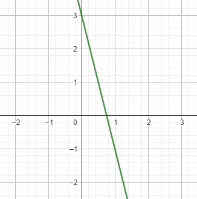
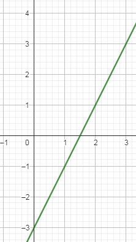
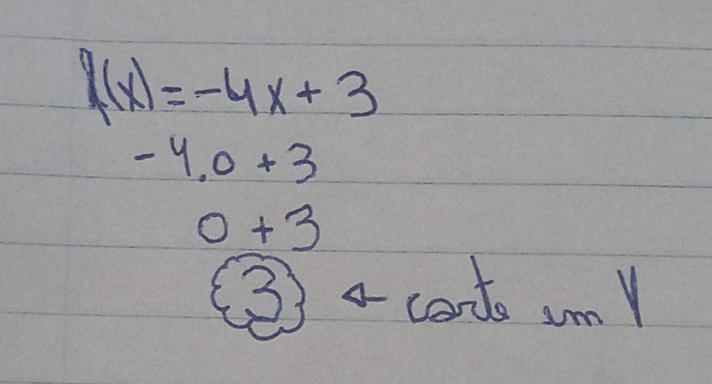
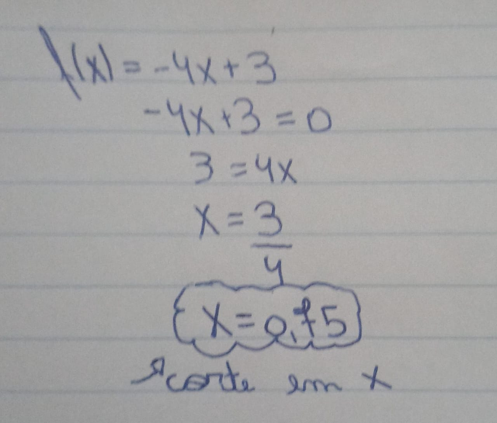
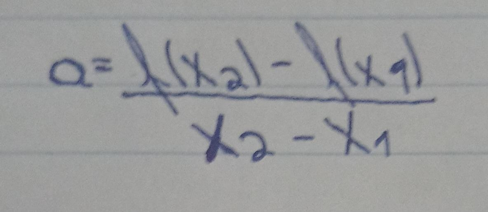
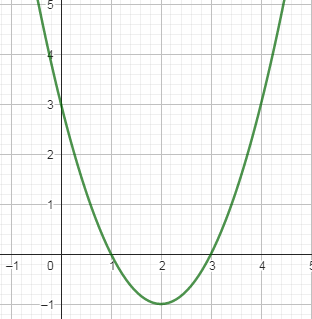
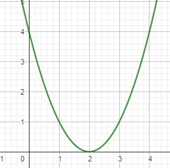
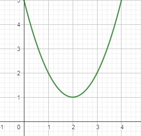
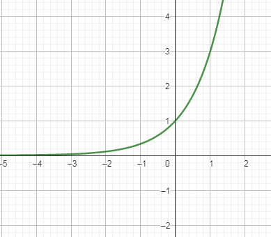
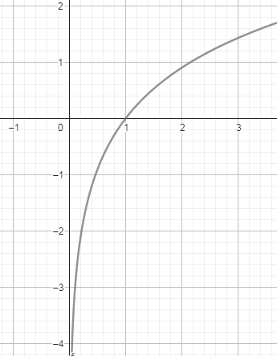

HOME
Navegue pelos conteúdos
Links
Segundo trimestre :
Conteúdos trabalhados
- Função Afim
- Gráficos
- Função Quadrática
- Funções Exponenciais
- Logaritmos
Abaixo estará a explicação de cada conteúdo, bem como minhas opiniões.
1° Conteúdo
Função Afim
Voltar ao topo
Gráficos
Um gráfico de uma função afim é uma reta, podendo variar o eixo/sentido. Logo, serão necessários no mínimo 2 pontos para traçar a reta.
Para traçarmos o gráfico, podemos utilizar 2 formas diferentes, sendo elas :
Atribuir Valores
Nessa forma, você irá atribuir valores diferentes para 'X', para achar sua correspondência em 'Y'.
Segue abaixo um exemplo :

Neste exemplo, usei a seguinte função : f(x)= -4x + 3. Atribuiremos 2 valores, 2 e -3, respectivamente para 'a' e 'b' para vermos a reta mudando
Assim ficou gráfico após a alteração :

No entanto, também temos outra forma de achar o gráfico de uma função afim, e que é a forma que eu utilizo :
Achar os pontos em que a reta corta o eixo X e o eixo Y, da seguinte maneira :
Encontramos o corte em X igualando a função a 0(zero) e encontramos o corte em Y igualando X=0. Abaixo segue um exemplo com a função f(x)= -4x+3 :


Mais algumas coisas importantes que aprendemos :
Como saber se a reta será crescente : a > 0; Como saber se a reta será decrescente : a < 0.
Taxa de variação : A taxa de variação (coeficiente angular)

Função Quadrática
Voltar ao topo
Funções Quadráticas
As funções quadráticas são um tipo importante de função matemática que podem ser representadas pela forma geral:
f(x) = ax^2 + bx + c
Onde:
- ( a ) é o coeficiente quadrático,
- ( b ) é o coeficiente linear e
- ( c ) é a constante.
As funções quadráticas são conhecidas por criar curvas chamadas de parábolas. A direção de abertura da parábola (para cima ou para baixo) e suas raízes (pontos de interceptação com o eixo x) dependem dos coeficientes a, b e c.
Definição de Parábolas
As parábolas podem ser classificadas em três tipos com base nas raízes da função quadrática (são as soluções da equação ( ax^2 + bx + c = 0 ) usando a fórmula de Bhaskara):
-
Parábola com Duas Raízes Reais:
- Quando a equação ( ax^2 + bx + c = 0 ) tem duas raízes reais distintas ( Delta > 0 ), a parábola corta o eixo x em dois pontos distintos.
- Exemplo : f(x)= x^2 - 4x + 3 
-
Parábola com Uma Raiz Real:
- Quando a equação \( ax^2 + bx + c = 0 \) tem apenas uma raiz real (\( \Delta = 0 \)), a parábola toca o eixo x em um único ponto (raiz dupla).
- Exemplo : f(x)= x^2 - 4x + 4 
-
Parábola sem Raízes Reais:
- Quando a equação ( ax^2 + bx + c = 0 ) não tem raízes reais ( Delta < 0 ), a parábola não corta o eixo x em nenhum ponto real.
- Exemplo : f(x)= x^2 - 4x + 5 
Construção de um Gráfico de Função Quadrática
Para construir o gráfico de uma função quadrática, siga estes passos:
- Identifique os valores de ( a ), ( b ) e ( c ) na equação.
- Calcule o vértice usando a fórmula do vértice, para X : ((-b)/(2a)) e para Y : ((-Delta)/(4a))
- Use a fórmula de Bhaskara para encontrar as raízes da função, que determinarão os pontos de interceptação com o eixo x.
- Trace a parábola usando os valores calculados. Lembre-se de que o valor de a determina a direção de abertura.
Função Exponencial
Voltar ao topo
Funções Exponenciais
Definição
As funções exponenciais são um tipo importante de função matemática que podem ser definidas como:
f(x) = a^x
Onde:
- 'a' é a base da exponenciação e é um número real positivo diferente de 1.
- 'x' é o expoente, que pode ser qualquer número real.
As funções exponenciais têm propriedades únicas, incluindo crescimento ou decaimento exponencial, que são amplamente usadas em várias áreas da matemática e da ciência.
Construção do gráfico
Para construir o gráfico de uma função exponencial, seguimos estes passos :
- Escolha a base 'a' da função (Se não foi informada).
- Escolha os valores de 'x' para os quais você deseja calcular f(x).
- Calcule os valores correspondentes de f(x) = a^x.
- Trace os pontos no gráfico.
Aplicações na vida real
As funções exponenciais são amplamente utilizadas em diversas áreas da matemática, ciência e engenharia. Aqui estão alguns exemplos :
-
Crescimento Populacional: A função exponencial é usada para modelar o crescimento de populações, como a população de uma cidade.
-
Decaimento Radioativo: Em física nuclear, a função exponencial é usada para descrever o decaimento de núcleos radioativos ao longo do tempo.
-
Finanças: As funções exponenciais são aplicadas em finanças para calcular juros compostos, crescimento de investimentos e depreciação de ativos.
-
Fenômenos Naturais: Modelar fenômenos naturais, como a propagação de doenças infecciosas ou o crescimento de bactérias em culturas.
Exemplo de Equação Exponencial
Vamos resolver a seguinte equação exponencial:
2^x = 16
Para resolver essa equação, podemos usar o fato de que 2^4 = 16. Portanto, podemos substituir 16 por 2^4 na equação:
2^x = 2^4
Agora, igualamos os expoentes:
x = 4
Portanto, a solução para a equação exponencial 2^x = 16 é x = 4. Isso significa que o valor de x que torna a equação verdadeira é x = 4.
Irei mostrar um gráfico de uma equação exponencial (f(x)= 3^x) para analisarmos o mesmo : 
>
podemos ver que uma função exponencial cresce lentamente no começo, no entanto, depois cresce rapidamente conforme mais o tempo, por exemplo, passa.
Funcão Logarítmica
Voltar ao topo
Logaritmos
Logaritmos são uma parte fundamental da matemática que estão intimamente relacionados à exponenciação. Um logaritmo é o inverso de uma operação exponencial.
A notação padrão de um logaritmo é:
log_b(x)
Onde:
- b é a base do logaritmo,
- x é o número para o qual você deseja encontrar o logaritmo.
Os logaritmos são usados em uma variedade de campos, incluindo matemática, ciências naturais, engenharia e computação.
Função Logarítmica
Uma função logarítmica é uma função que envolve logaritmos. A forma geral de uma função logarítmica é:
f(x) = log_b(x)
As funções logarítmicas têm várias propriedades úteis, incluindo a capacidade de reduzir números muito grandes ou muito pequenos a escalas mais gerenciáveis.
Propriedades dos Logaritmos
Existem várias propriedades dos logaritmos que facilitam cálculos complexos, incluindo a regra do produto, a regra do quociente e a regra da potência.
Aplicações
Os logaritmos e funções logarítmicas são usados em várias aplicações práticas, incluindo:
-
Ciências Naturais: Em química, para calcular o pH de soluções ácidas ou alcalinas.
-
Economia: Em finanças, para calcular o crescimento exponencial de investimentos.
-
Tecnologia: Em ciência da computação, para análise de algoritmos e eficiência computacional.
Esses são apenas alguns exemplos das muitas aplicações dos logaritmos e funções logarítmicas na vida cotidiana e em várias disciplinas.
Construção de Gráfico Logarítmico
Um gráfico logarítmico é uma representação visual de dados usando uma escala logarítmica em um ou ambos os eixos. Isso é útil para representar dados que abrangem uma ampla gama de valores, tornando os detalhes mais visíveis em uma escala logarítmica.
Passos para Construir um Gráfico Logarítmico
- Escolha os Dados: Comece escolhendo os dados que você deseja representar no gráfico logarítmico. Esses dados devem ser positivos, pois a escala logarítmica não permite valores negativos.
- Defina a Escala: Determine qual eixo (ou ambos) terá uma escala logarítmica. Você pode escolher uma base de logaritmo, como base 10 (logaritmo decimal) ou base e (logaritmo natural).
- Calcule os Logaritmos: Para cada valor de dados, calcule o logaritmo correspondente na base escolhida. Por exemplo, se você estiver usando base 10, calcule o logaritmo decimal de cada valor.
- Crie o Gráfico: Desenhe um sistema de coordenadas com os valores originais no eixo apropriado e os logaritmos correspondentes no outro eixo. Isso criará a escala logarítmica.
- Plotagem dos Pontos: Plote os pontos de dados no gráfico usando os valores originais no eixo apropriado e os logaritmos no outro eixo. Você pode usar pontos ou linhas para representar os dados.
Exemplo de Gráfico Logarítmico

Voltar ao topo
Reflexão sobre cada conteúdo
Funções Afins: Entendi que essas funções são representadas por uma linha reta,
e sua inclinação (coeficiente angular) determina a taxa de variação.
É interessante como elas descrevem relações de proporcionalidade.
Funções Quadráticas: Percebi que essas funções têm uma forma de "U" e que seus vértices são cruciais para
entender seu comportamento. As raízes também são importantes para encontrar os pontos
de interseção com o eixo x.
Funções Exponenciais: Compreendi que essas funções crescem ou decaem rapidamente,
dependendo da base da exponenciação.
Funções Logarítmicas: Fiquei impressionado com a forma como essas funções invertem as operações exponenciais,
tornando-as úteis em situações de crescimento ou decaimento em taxas constantes.